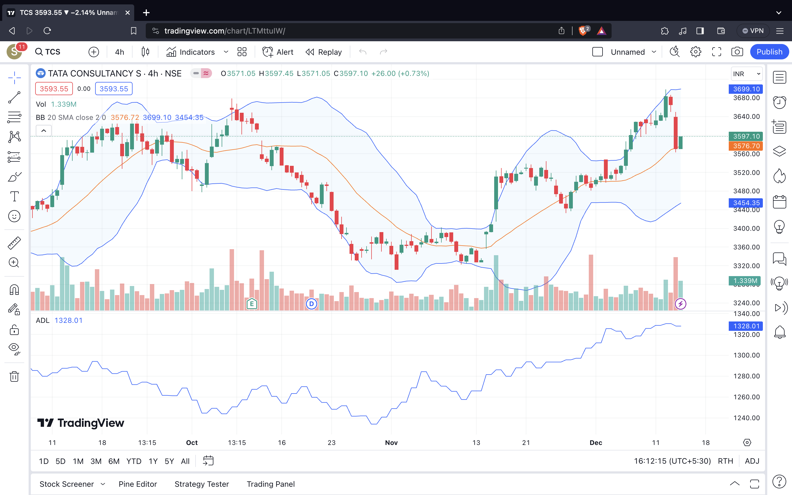
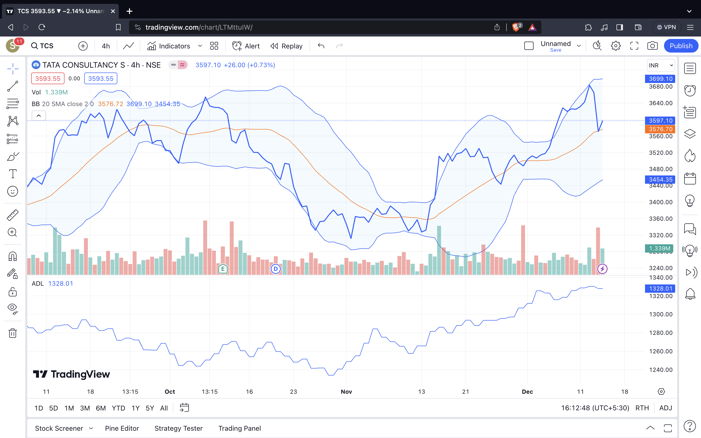

Trading Basics
Welcome to the world of trading! This page provides an introduction to the fundamental concepts of trading, helping you establish a solid foundation for your trading journey.
Types of Trading
Trading comes in various forms, each catering to different strategies and time horizons. Here are some common types of trading:
- Day Trading: Buying and selling financial instruments within the same trading day. Day traders aim to profit from short-term price movements.
- Swing Trading: Holding positions for a few days to weeks to capture price swings or trends.
- Position Trading: Taking a longer-term approach and holding positions for weeks, months, or even years based on fundamental analysis.
- Scalping: Making numerous small trades to capture small price movements. Scalpers aim for quick profits within minutes or seconds.
- Algorithmic Trading: Using automated systems and algorithms to execute trades based on predefined criteria.
Understanding Trading Charts
Charts are essential tools for traders to analyze price movements. Here are common types of trading charts:
- Line Chart: Shows the closing prices of a financial instrument over time, connecting each closing price with a line.
- Candlestick Chart: Represents price movements with candlesticks, including open, close, high, and low prices for a specific period.
- Bar Chart: Displays price movements using bars, including open, close, high, and low prices for a specific period.
Below are examples of a candlestick chart and a line chart:

Example Candlestick Chart

Example Line Chart